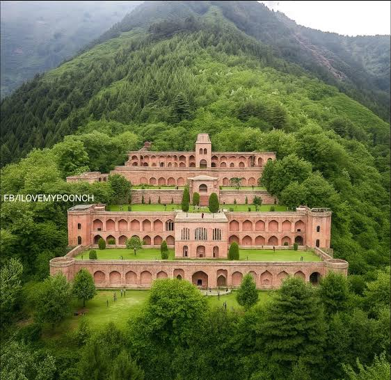

Pari Mahal

Description
Pari Mahal, the Palace of Fairies, is a terraced garden complex set on a ridge above Srinagar. It offers panoramic views and a quiet atmosphere for reflection.
History
Built during the Mughal era, Pari Mahal later served as an observatory and a place of learning. Its terraces and pavilions reflect a blend of Mughal and local architectural sensibilities.